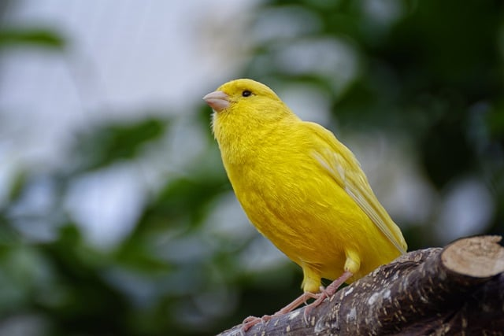
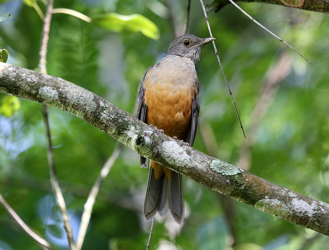
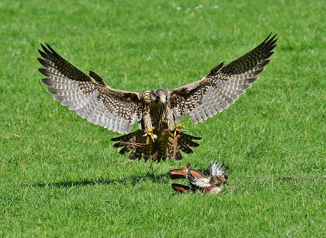
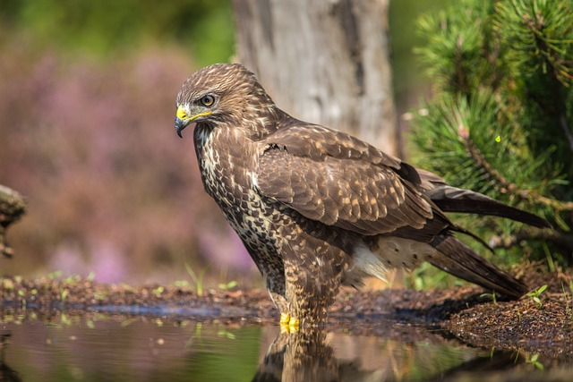
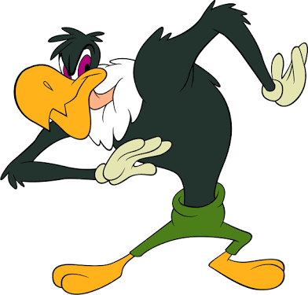

O canário-da-terra (nome científico: Sicalis Flaveola) é uma ave nativa da América do Sul, conhecido pelo seu canto melodioso e plumagem amarela brilhante dos machos, que os torna facilmente reconhecíveis. Ele tem um comportamento territorial bastante forte, especialmente durante a época de acasalamento. A distinção entre machos e fêmeas é bastante clara. Além da diferença de cor, o macho canta mais frequentemente.
Sabiá Laranjeira (nome científico: Turdus Rufiventris), ave símbolo no Brasil. Sua presença está muito associada à cultura popular e à natureza do país. O sabiá-laranjeira começa a cantar muito cedo, muitas vezes antes do por do sol, sendo um dos primeiros sons da manhã em áreas onde vive. Além de inspirar a literatura, o sabiá-laranjeira é uma figura presente na música.
Os flamingos são aves facinantes, conhecidas por sua elegância, cor rosa vibrante e comportamento social. A famosa cor rosa dos flamingos vem de sua alimentação, rica em carotenóides, pigmentos encontrados em algas e crustáceos como camarões. Quando filhotes, os flamingos são cinzas ou brancos, e só desenvolvem a cor ao longo do tempo devido à dieta. Uma das posturas mais icônicas dos flamingos é quando ficam equilibrados em uma perna só.
O falcão-peregrino é o animal mais rápido do mundo, podendo atingir velocidades de até 320 km/h durante seus mergulhos de caça (chamados de "voos de ataque"). Eles usam essa velocidade extrema para capturar presas em pleno voo. Falcões possuem uma visão incrivelmente nítida. Sua acuidade visual é oito vezes melhor que a dos seres humanos. Eles conseguem enxergar pequenos animais ou movimentos a grandes distâncias, sendo capazes de localizar presas a mais de 3 km de altura.
Existem mais de 200 espécies de gaviões no mundo, com uma diversidade incrível de tamanhos, habitats e comportamentos. Alguns exemplos conhecidos são o gavião-carijó e o gavião-peneira. Gaviões são famosos por suas habilidades de voo. Eles podem planar por longos períodos, usando correntes de ar quente para economizar energia. Quando avistam uma presa, são capazes de realizar mergulhos rápidos e precisos para capturá-la.
Zeca Urubu (em inglês: Buzz Buzzard) é um dos principais vilões da série de desenhos animados do Pica-Pau (Woody Woodpecker). Ele é um personagem recorrente e atua como um antagonista em diversas histórias, sempre tentando enganar ou se aproveitar do protagonista, Pica-Pau. No Brasil, Zeca Urubu foi dublado por diversos atores ao longo dos anos, sendo o mais conhecido Orlando Drummond.